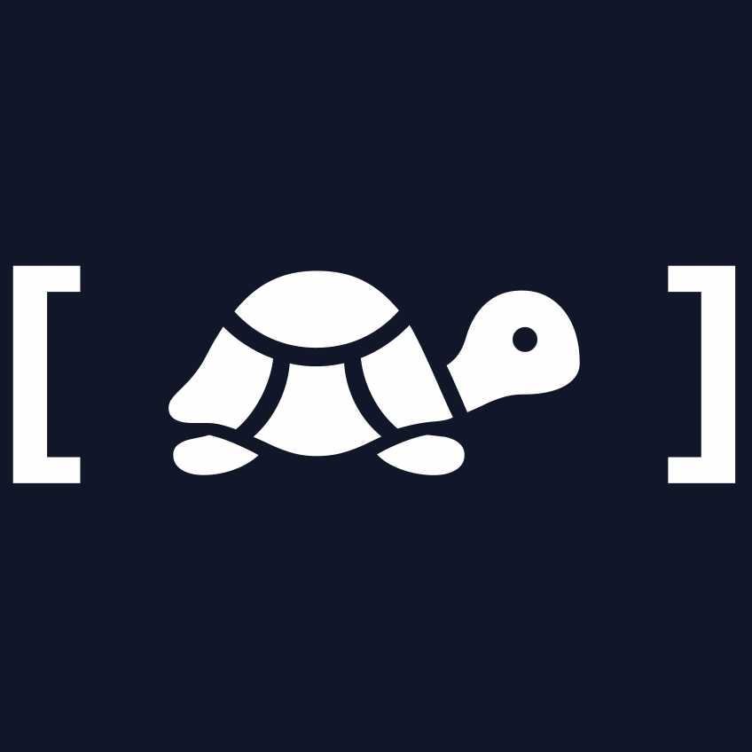
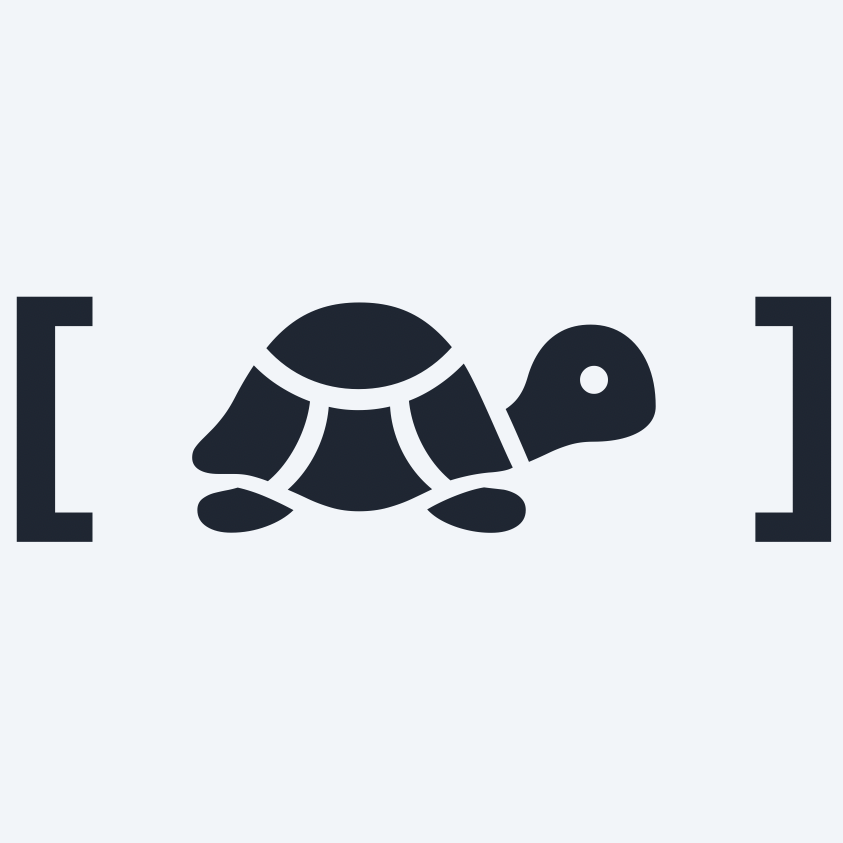
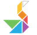

For tweets @objcturtle
...and toots @objcturtle@mastodon.social
...and...commits? https://github.com/objcturtle

Business tweets @nativecraneapps
...and business toots @nativecrane@mastodon.social
...and...business commits? https://github.com/nativecrane
Or by whoosh
NSLog(@"%@@%@", @"casey", @"objcturtle.com");